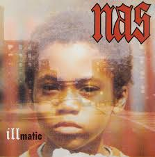

.png)
Los mejores discos de rap de la historia
El rap nos ha dejado álbumes que no solo son música, sino verdaderas piezas de historia. Cada uno refleja un momento, una lucha, una cultura y un estilo que marcaron a millones de oyentes. Estos discos rompieron barreras, abrieron caminos y consolidaron al hip hop como una de las expresiones artísticas más influyentes del mundo. En este apartado encontrarás los 20 álbumes más importantes del género, obras que transformaron la manera de entender el rap y que todavía hoy siguen inspirando a nuevas generaciones.
LOS 20 ALBUNES CONSIDERADOS LOS MEJORES DISCOS DE RAP
1. Illmatic - (1994) NasIllmatic (1994) es el debut de Nas y uno de los álbumes más importantes del rap. Rretrata la vida en Queensbridge con letras poéticas y realistas, sobre beats de productores legendarios como DJ Premier y Pete Rock. Mejores canciones
|
2. Ready to Die - (1994) The Notorious B.I.G.
Este album es puro storytelling crudo, flows pesados y producción clásica de la Costa Este. Un pilar que definió el sonido de los 90, ademas del gran debut de Biggie. Mejores canciones
|
3. All Eyez on Me - (1996) 2Pac
Es el primer álbum doble de hip hop de la historia. Grabado tras la salida de prisión de 2Pac, muestra su ambición, energía y contradicciones: habla de fiestas, lujos, dolor y la violencia de la calle. Mejores canciones
|
4. Enter the Wu-Tang (36 Chambers) - (1993) Wu-Tang Clan
Con producción cruda de RZA, mezcla letras de calle, filosofía kung-fu y estilos únicos de cada miembro (Method Man, Ol’ Dirty Bastard, Raekwon, Ghostface Killah, GZA, etc.). Su sonido áspero y creativo abrió la puerta a toda una nueva era del hip hop en los 90.
Mejores canciones |
5. The Blueprint - (2001) Jay-Z
The Blueprint es considerado uno de los mejores discos de Jay-Z y un clásico del hip hop. Fue lanzado el mismo día de los atentados del 11 de septiembre, pero aun así se convirtió en un éxito. Con beats mayormente de Kanye West y Just Blaze, combina arrogancia, lirismo afilado y producción soul con samples elegantes. Este álbum consolidó a Jay-Z como el “rey de Nueva York”.
Mejores canciones |
6. My Beautiful Dark Twisted Fantasy - (2010) Kanye West
Este álbum es considerado la obra maestra de Kanye y uno de los mejores discos de la década. Grabado en Hawái tras la polémica con Taylor Swift, mezcla rap, soul, rock, electrónica y orquestaciones grandiosas. Es un proyecto ambicioso, oscuro y a la vez glamuroso, donde Kanye explora fama, excesos, amor y vulnerabilidad. |
7. The Chronic - (1992) Dr. Dre
Marcó el nacimiento del sonido G-Funk, con bajos pesados, sintetizadores y samples de funk setentero. Además, sirvió como plataforma para lanzar a Snoop Doggy Dogg, es considerado un pilar del rap West Coast y uno de los discos más influyentes de la historia del hip hop.
Mejores canciones |
8. To Pimp a Butterfly - (2015) Kendrick Lamar
Un álbum revolucionario: jazz, funk y rap unidos con letras profundas sobre identidad, racismo y superación. Es considerado una de las obras maestras modernas del hip hop por su complejidad musical y su profundo mensaje social.
Mejores canciones |
9. Aquemini - (1998) Outkast
El título mezcla sus signos zodiacales (Aquarius y Gemini). Es un disco que une funk, soul, rap sureño y psicodelia, con letras que van desde la vida callejera hasta la espiritualidad. Está considerado uno de los álbumes más innovadores y completos del hip hop de los 90.
Mejores canciones |
10. The Marshall Mathers LP - (2000) Eminem
Con producción de Dr. Dre, mezcla humor negro, crudeza y confesiones personales. Es polémico por sus letras explícitas, pero también aclamado por su técnica y honestidad brutal. Está considerado uno de los discos más influyentes del rap de los 2000.
Mejores canciones |
11. The Miseducation of Lauryn Hill - (1998) Lauryn Hill
Es el único álbum en solitario de Lauryn Hill y uno de los más aclamados de la historia. Mezcla rap, soul, R&B y reggae, con letras sobre amor, fe, maternidad y autodescubrimiento. Ganó 5 premios Grammy, incluido Álbum del Año, y es considerado un clásico atemporal.
Mejores canciones |
12. The Low End Theory - (1991) A Tribe Called Quest
Este es el segundo álbum del grupo y uno de los pilares del rap de los 90. Se caracteriza por su sonido jazz-rap, con bajos profundos, samples de jazz y rimas fluidas de Q-Tip y Phife Dawg. Fue un disco innovador que dio forma a la fusión entre hip hop y jazz, influyendo en generaciones posteriores.
Mejores canciones |
13. It Takes a Nation of Millions to Hold Us Back - (1988) Public Enemy
Este es el segundo álbum de Public Enemy y uno de los discos más influyentes del hip hop. Con la producción agresiva de The Bomb Squad, combina beats densos y caóticos con letras políticas de Chuck D, denunciando racismo, injusticia social y la lucha por la conciencia negra. Se considera un clásico revolucionario del rap.
Mejores canciones |
14. The College Dropout - (2004) Kanye West
Es el álbum debut de Kanye. Revolucionó el rap de la época al alejarse del estilo gangsta dominante, apostando por samples de soul, letras sobre familia, religión, sueños y críticas al sistema educativo. Fue un éxito comercial y crítico, y marcó el inicio de su legado artístico.
Mejores canciones |
15. AmeriKKKa’s Most Wanted - (1990) Ice Cube.jpg)
El disco combina la producción de The Bomb Squad (conocidos por su trabajo con Public Enemy) y un estilo directo y agresivo de Cube. Sus letras denuncian el racismo, la brutalidad policial y la vida en los barrios pobres de Los Ángeles. Es considerado uno de los debuts más poderosos e influyentes del rap.
Mejores canciones |
16. good kid, m.A.A.d city - (2012) Kendrick Lamar
Es un disco conceptual que narra un día en su vida como adolescente en Compton, mostrando la tensión entre sueños personales y la violencia de su entorno. Mezcla storytelling cinematográfico con beats modernos y letras profundas. Se considera un clásico contemporáneo del hip hop.
Mejores canciones |
17. Raising Hell - (1986) Run-D.M.C.
Un punto clave en la historia del rap fue el primer disco de hip hop en lograr disco de platino y en sonar fuerte en la radio mainstream. Mezcla beats duros con guitarras de rock, mostrando cómo el rap podía cruzar fronteras y convertirse en cultura global.
Mejores canciones |
18. Paul’s Boutique - (1989) Beastie Boys
Una obra maestra del hip hop experimental. Producido por los Dust Brothers, está lleno de samples complejísimos (funk, rock, jazz, soul, hasta música disco) y rimas juguetonas. Aunque al inicio fue un fracaso comercial, con el tiempo se convirtió en un clásico de culto y un referente del sampling.
Mejores canciones |
19. The Infamous - (1995) Mobb Deep
Un clásico absoluto del rap neoyorquino, Con atmósferas oscuras, beats sombríos y letras sobre la vida en los barrios más duros, ayudó a definir el sonido del hardcore hip hop de los 90. Es considerado una de las piedras angulares del East Coast rap.
Mejores canciones |
20. Stankonia - (2000) Outkast
André 3000 y Big Boi exploran sonidos de funk, rock, electrónica y rap sureño, creando un disco atrevido, psicodélico y experimental. Fue un gran éxito comercial y de crítica, consolidando a OutKast como uno de los grupos más innovadores del hip hop.
Mejores canciones |